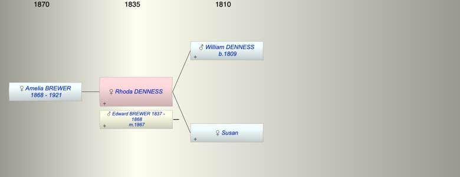

| [Index] |
| Rhoda DENNESS |
|  |
| m. 1867 Edward BREWER (1837 - 1868) at Diptford |
| Near Relatives of Rhoda DENNESS | ||||||
| Relationship | Person | Born | Birth Place | Died | Death Place | Age |
| Father in Law | James BREWER | 1807 | Exminster | 11 Apr 1881 | 4 Victoria Cottages, Parr St Exeter | 74 |
| Mother in Law | Mary LETHBRIDGE | |||||
| Father | William DENNESS | 1809 | Rattery, Devon | |||
| Mother | Susan | |||||
| Self | Rhoda DENNESS | |||||
| Husband | Edward BREWER | 03 Feb 1837 | 20 Jun 1868 | Alphington | 31 | |
| Daughter | Amelia Dennis BREWER | 1868 | Diptford | 27 Jan 1921 | 53 | |
| Nephew | Living or Recently Deceased | |||||
| Nephew | Frederick BREWER | 31 Dec 1869 | Alphington | 26 Jun 1870 | Alphington | 0 |
| Nephew | Ernest Samuel BREWER | 03 Oct 1871 | Alphington | 1886 | Exeter | 15 |
| Niece | Amelia BREWER | 16 Jul 1874 | Alphington | Y | ||
| Niece | Rosana BREWER | 1877 | Alphington | Y | ||
| Niece | Florence BREWER | 1882 | ||||
| Niece | Ellen BREWER | 1884 | Exeter | |||
| Nephew | Albert Edward BREWER | 1887 | 1932 | Exeter | 45 | |
| Nephew | Alfred EARL HERBERT | 1872 | St Pancras | |||
| Niece | Living or Recently Deceased | |||||
| Niece | Living or Recently Deceased | |||||
| Nephew | Living or Recently Deceased | |||||
| Nephew | Aubrey Arthur HERBERT | 12 Sep 1886 | Upper Holloway | 1934 | Lambeth | 48 |
| Nephew | William Edward BREWER | 08 Jan 1880 | Ballincollig (near Cork, Ireland) | 1912 | 32 | |
| Nephew | James BREWER | 25 Oct 1881 | Aldershot, England | 21 Jan 1924 | 42 | |
| Nephew | Frederick John BREWER | 10 Feb 1887 | Bristol | |||
| Nephew | Joseph BREWER | 05 Aug 1890 | Co Cork, Ireland | 1918 | 28 | |
| Niece | Living or Recently Deceased | |||||
| Sister in Law | Ann BREWER | 03 Jan 1839 | Alphington | 25 Nov 1841 | Alphington | 2 |
| Brother in Law | James BREWER | 23 Oct 1842 | Alphington | 1885 | Alphington | 43 |
| Sister in Law | Amelia BREWER | 27 Oct 1846 | 05 Nov 1871 | 25 | ||
| Brother in Law | Samuel BREWER | 1848 | Alphington | 1901 | Alphington | 53 |
| Sister in Law | Charlotte BREWER | 26 Jul 1851 | Alphington | 1940 | Pinhoe | 89 |
| Sister in Law | Jane BREWER | 03 Dec 1854 | Alphington | Y | ||
| Brother in Law | William BREWER | 03 Dec 1854 | Alphington | 07 Aug 1912 | 57 | |
| Events in Rhoda DENNESS's life | |||||
| Date | Age | Event | Place | Notes | Src |
| 1867 | Married Edward BREWER (aged 30) | Diptford | Of Alphington Father James | ||
| 1868 | Birth of daughter Amelia Dennis BREWER | Diptford | Note 1 | ||
| 20 Jun 1868 | Death of husband Edward BREWER (aged 31) | Alphington | |||
| 27 Jan 1921 | Death of daughter Amelia Dennis BREWER (aged 53) | ex private tree on Ancestry | |||
| Note 1: ex 1871 census Diptford is questionable baptised Alphington 28 Jun 1868 |
| Created on a Mac™ using iFamily for Mac™ on 15 Sep 2023 |